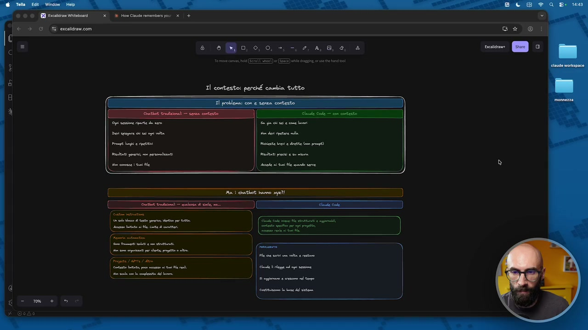
OCR: #3 ercaldiavicom DI e eo 0,0 -. 2, 4,6, 0, è ome ca, bl (EF I (ZA) ble gi, it had is Il contesto: perché cambia tutto dette batta pun sua iui Nr. de vela li ita dl cm
E ora parliamo finalmente di contesto, che è un argomento che va un po' a braccetto con il workspace, quindi con lo spazio di lavoro che abbiamo visto in precedenza. Allora, il contesto, mi avete sentito dire dall'inizio di questo corso, che è quello che fa veramente la differenza. Ci sono diverse cose che fanno la differenza in Cloud Code. Le tre principali probabilmente sono il workspace, il contesto e le skill. Il workspace l'abbiamo visto, adesso vedremo il contesto, poi vediamo pure le skill. Il contesto è l'ambiente all'interno del quale si muove, la memoria che è accumulata nel tempo, le informazioni, i ricordi, i pezzettini che usa ogni volta che voi gli fate una richiesta. E qua voglio partire come sempre con un po' di spiegazione, prima di andarlo a vedere poi concretamente, perché voglio che voi capiate cosa c'è dietro, perché è importante questa parte. Un attimo, diciamo, classico schema di confronto, con e senza.
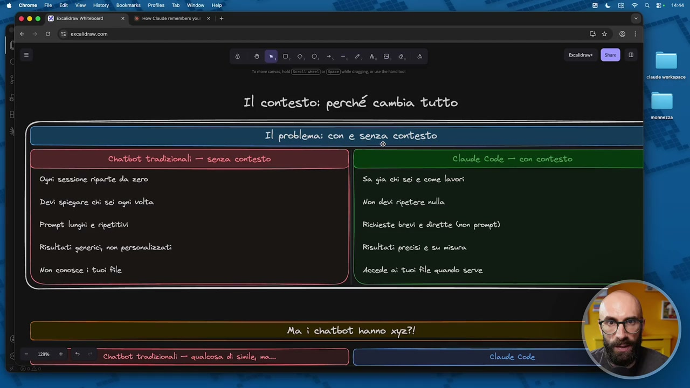
OCR: Claude Code — con contesto Devi spiegare chi sei ogni volta Prompt lunghi e ripetitivi Risultati generici, non personalizzati Non conosce ì tuoi file Sa gia chi sei e come lavori Non devi ripetere nulla Richieste brevi e dirette Gron prompt) Risultati precisi e su misura Accede ai tuoi file quando serve Chatbot tradizionali — qualcosa di simile, ma...
Allora, di qua ci sono i chatbot tradizionali, non ho scritto CGPT stavolta, così non indico un solo strumento. Ma per farvi capire, da questo lato, quindi a sinistra abbiamo lo strumento, il chatbot, quindi CGPT, Cloud Chat, Gemini, Copilot, Grok, quello che volete voi. Da questo lato abbiamo Cloud Code, che abbiamo ripetuto varie volte e lo ribadisco, non è uno strumento, è un ambiente, ok? Vi ricordate? È un contenitore e dentro ci sono varie cose, tra cui il modello Cloud che viene utilizzato. Il fatto di non avere contesto che significa? Ogni sessione riparte da zero, dobbiamo sempre stare a spiegare alcune cose, i prompt sono lunghi, infatti si fa questo lavoro infinito di prompt engineering, spesso anche ripetitivi, i risultati sono più o meno personalizzati, sui file conosce molto poco. Lo so che leggendo questo qualcuno potrebbe dire, Raph, no, ma come, però ci sono le custom instructions,
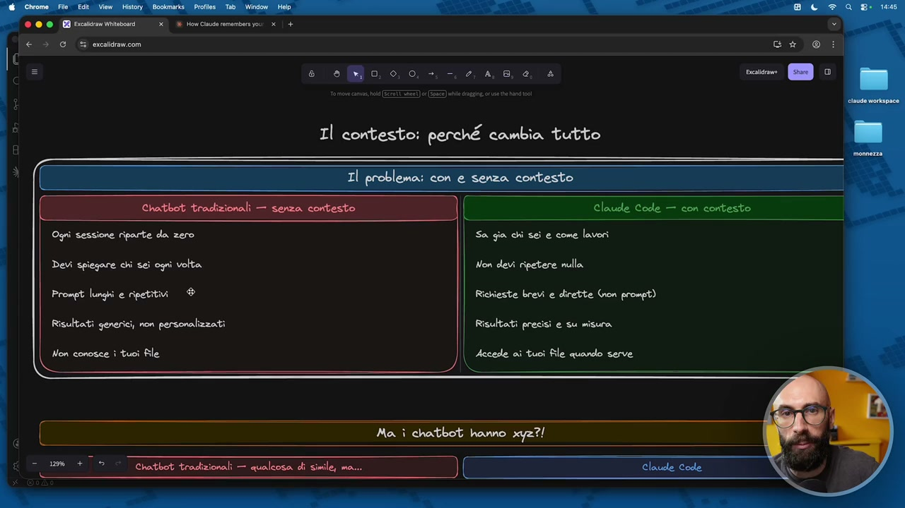
OCR: Ogni sessione riparte da zero Devi spiegare chi sei ogni volta Prompt lunghi e ripetitivi È Risultati generici, non personalizzati Non conosce ì tuoi file Sa gia chi sei e come lavori Non devi ripetere nulla Richieste brevi e dirette (on prompt) Risultati precisi e su misura Accede ai tuoi file quando serve
non vi preoccupate, perché questo è il secondo pezzo di questa lezione, ci arrivo. Qua sono stato molto ampio per dirvi, quando non abbiamo il contesto, il risultato è pessimo. Poi nei chatbot un pezzettino di contesto lo possiamo dare, un pezzettino, o lo scriviamo nel prompt, oppure usiamo alcune funzionalità, che ve le faccio vedere. Comunque non sono paragonabile a Cloud Code. Il fatto invece di avere il contesto, quindi avere proprio una struttura di contesto, molto seria, fatta bene, modulare, significa che la piattaforma sa chi sei, come lavori, quindi sa tutto di te, non devi ripetere le cose, e questo l'avete già visto in qualche video precedente di questo corso. Scrive una cosa, lui intuiva che in precedenza avevo detto che in un preventivo avevo usato quel tipo di nome per i file, quindi tutti i file si dovevano chiamare in quel modo. Quello lo aveva intuito, ormai lo sapeva di me, non glielo dovevo dire mai più. Le risposte sono brevi, sono dirette, le richieste sono brevi, non sono più dei prompt.
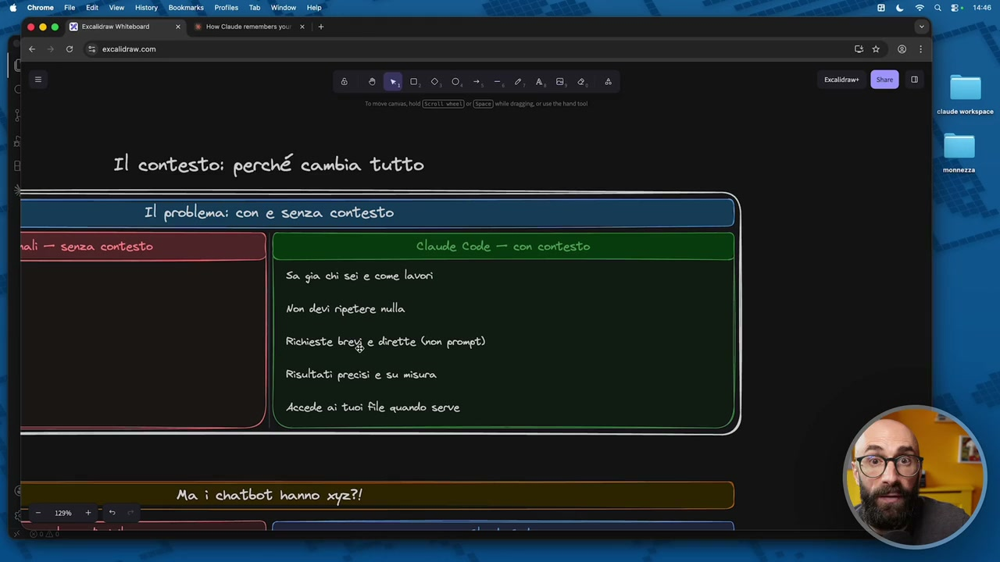
OCR: Sa gia chi sei e come lavori Non devi ripetere nulla Richieste brey e dirette Gion prompt) Risultati precisi e su misura Accede ai tuoi file quando serve Ma î chatbot homo xyz?!
Cioè usciamo proprio dall'ottica di tirate, posso scrivere il prompt strutturato, lungo, come mi ha insegnato Raffaele Gaito, con il contesto, con la richiesta, eccetera, eccetera, come abbiamo fatto per anni. Avete visto, io dialogo, gli dico, fammi questa cosa, spostami queste cartelle, dublimi questo preventivo. I risultati sono precisi, sono sempre su misura, e soprattutto accede ai tuoi file quando serve. Fatemi, come sempre, sottolineare qua questa cosa, quando serve. Questa capacità è fondamentale. Questo fatto che lo faccio in maniera dinamica è quello che fa la differenza. E qua arrivo un pochino, diciamo, a non l'obiezione, ma alla domanda che a volte alcune persone mi fanno quando parlo di Cloud Code in azienda, diciamo in altri contesti, mi dicono Raff, però non è che c'è a GPT, Cloud, Gemini non sanno niente di me. Io comunque gli posso mettere le custom instruction, comunque posso abilitare la memoria. Vero? Vero, vero, vero.
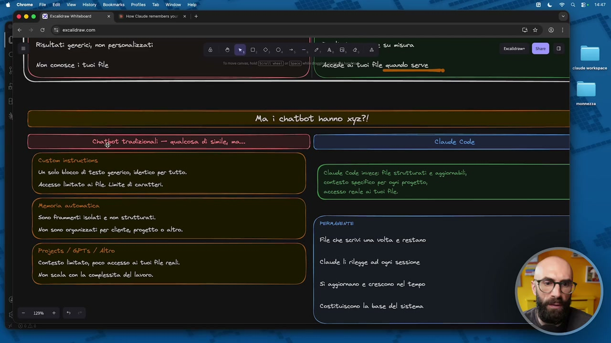
OCR: ED Ercaicr iabonrd lon conosce i tuoi file Chaibot tradizionali — qualcosa dii simile, ma... Clauele Code Custom instiruetions. Un solo blocco di testo generico, identico per tutto. Claude code invece; Ale strutturati e aggiornabili, Accesso linitatto ai Ale. Limite di caratteri. contesto speiico per ogni progetto, accesso reale ai tuoi file. Nenoria automatica Sono Frammenti isolati e non strutturati. Non sono organizzati per cliente, progetto 0 altro. PERMANENTE File che serivi una volta e restano Projects / GPTS / Altro Contesto limitato, poco accesso ai tuoi file reali. Claude li rilegge ad ognì sessione Non scala con la complessita del lavoro. ‘Sì aggiornano e crescono nel tempo Costituiscono la base del sistema
Infatti i chatbot tradizionali, ho detto, qualcosina di simile ce l'hanno, ma vediamo, diciamo, quali sono le limitazioni. Le custom instruction, vero, ci sono, se le utilizzate, ottimo, perché quelle servono, però è un solo blocco di testo, generico, identico per tutto, c'ha un limite di carattere di quanto potete scrivere, c'ha un accesso limitato ai file, alcuni vi fanno mettere i file, alcuni no, alcuni vi fanno mettere solo alcuni tipi di file e così via. Oppure il file c'ha una dimensione massima, eccetera. Alcuni di questi chatbot hanno la memoria, quindi io posso abilitare la memoria e, diciamo, cosa significa, se fece il chatbot, se scrivo, vivo a Londra, quali sono cinque parchi da vedere assolutamente, piglia l'informazione, Raffaele, viva a Londra, se lo mette in memoria, e da quel momento in poi non glielo dovrò dire più, perché si ricorda che vivo a Londra. Ma anche questo è limitato, perché, perché sono dei frammentini, se avete mai visto come funzionano, no, le memorie dei chatbot, sono dei frammentini, veramente, non sono strutturati e soprattutto non sono organizzati, cioè non rientrano in una struttura di lavoro. Perché? Perché vi ricordate che nei chatbot tradizionali si ragiona per chat,
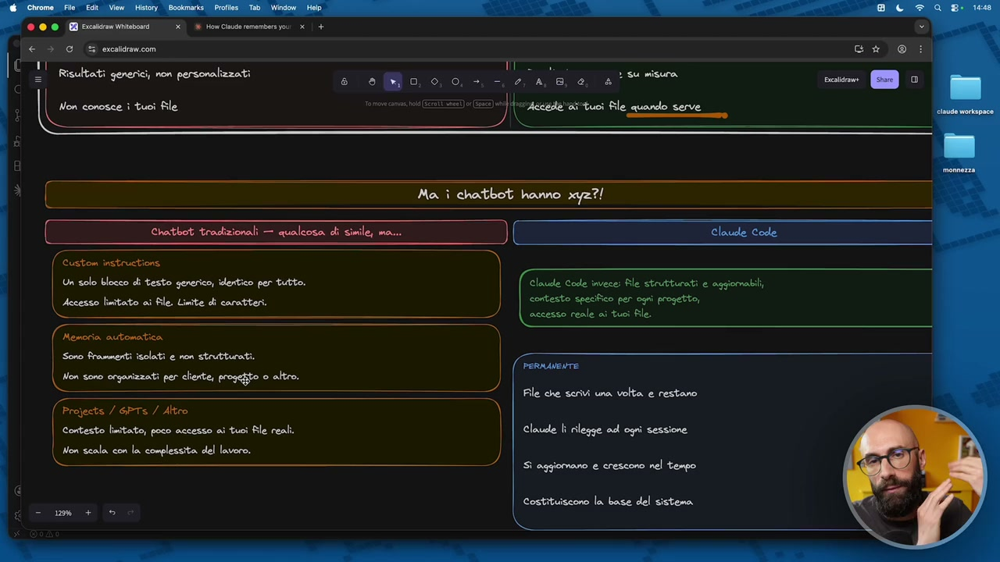
OCR: | € è SG & ecaldravcom (UL) Risultati generici, non personalizzati Chatbot tradizionali — qualcosa di simile, ma... Claude Code Custom instructions Un solo blocco di testo generico, identico per tutto. Claude Code invece; Ale strutturati e aggiornabili Accesso limitato ai Ale. Linite di caratteri. contesto specifico per ogni progetto, accesso reale ai tuoi file. Nenoria automatica Sono Frammenti isolati e non strutturati. FERnUIETE Non sono organizzati per cliente, rogo © altro. File che serivi una volta e restano Projects / 6PTS / Altro Contesto lisitato, poco accesso ai tuoi Ble reali. Claude lì rilegge adi ogni sessione Non scala con la complessita del lavoro. ‘Sì aggiornano e crescono nel tempo Costituiscono la base del sistema
che è un modo di lavorare limitante, dopo un po'. Invece noi lavoriamo per file, no, abbiamo sempre lavorato per progetti, per file, per output, e così via. Quando invece abbiamo il, diciamo, il contesto, quello che vi faccio vedere in questo modulo, il contesto lo organizziamo per bene, come vogliamo, per clienti, per progetto, e così via. E qualcuno potrebbe ancora dire, sì, Raph, beh, ma la memoria non è l'unica funzionità, ci sono poi i project, ci sono i gpt, ci sono le gemme, no, ci sono varie funzionità sparpagliate tra cloud, gemini, cioè gpt. Vero, anche questo è un altro bel passo in avanti, ma comunque c'ha delle limitazioni, perché il contesto è limitato, hanno poco accesso ai file, li dobbiamo precaricare prima, non vengono caricati in maniera dinamica, vengono accettati solo alcuni formati, non li legge direttamente dal nostro computer, non li può aggiornare in autonomia, fondamentalmente non scala. Questa è la questione principale, non scala.
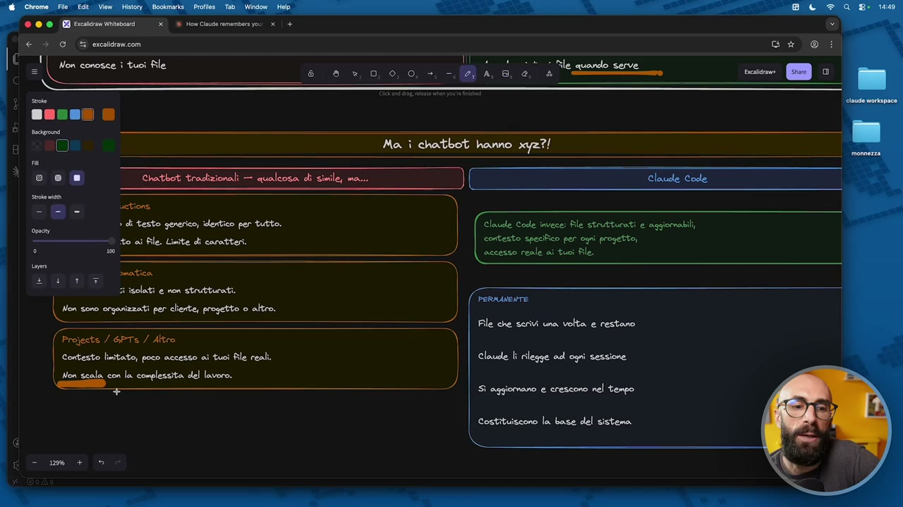
OCR: Far ini | € è SG & excaldravcom c ess Chatbot tradizionali — qualcosa di simile, ma... uetione » di testo generico, identico per tutto. to ai Ale. Limite di caratteri. doo Claude Code invese: file strutturati e aggiornabili, contesto specifico per ogni progetto, accesso reale ai tuoi Ale. 31 isolati e non strutturati. | on oo copiati per certa progetto 0 alt Projects / GPTE / Altro Contesto limitato, poco accesso ai tuoi file reali. Non scala con la complessità del lavoro. PERAUMENTE File che serivi una volta e restano Claude lì rilegge ad ogni sessione ‘Sì aggiornano e crescono nel tempo Costituiscono la base del sistema
Se invece voi partite con Cloud Code e avete tre clienti oggi e fra un anno avete 30 clienti, il sistema cresce insieme a voi. Da quest'altro lato invece, diciamoci, abbiamo l'approccio di Cloud Code, quindi, diciamo, del contesto, ok? Anzi, qua scriviamo proprio quando dico Cloud Code, intendo dire Cloud Code, quindi, con contesto. Ha dei file strutturati, sono aggiornabili, li possiamo aggiornare noi a mano, ma raramente lo facciamo, lo fa il sistema perché capisce che qualcosa è cambiato. Gli diciamo il giorno 1 che noi facciamo solo formazione, non facciamo consulenza, poi dopo un anno aggiungiamo nei nostri servizi la consulenza, lui capisce questa cosa e ci aggiorna il file. Possiamo fare il contesto specifico per ogni progetto, quindi siccome adesso abbiamo capito come organizzare le cartelle, è più facile capire dentro come mettere il contesto a pezzettini e soprattutto accesso reale ai tuoi file, la cosa che aggiungerei è in tempo reale, che invece diciamo nei chatbot è impossibile perché li devo caricare io.
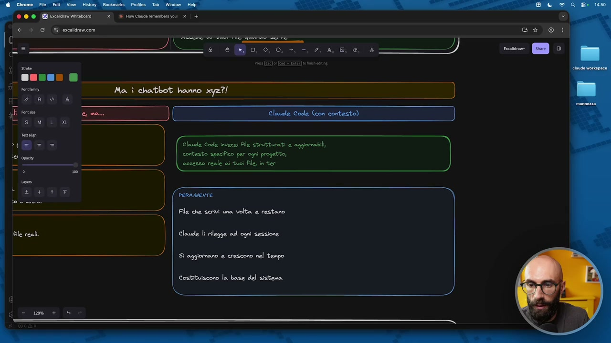
OCR: Ma. ì chatbot hanno xyz?! ) Cloude Code invece: Sle strutturati e aggiornabili, contesto specifico per ogni progetto, accesso reale ai tuoi file, in ter PERMANENTE File che scrivi una volta e restano Claude li rilegge ad ogni sessione ‘Sì aggiornano e crescono nel tempo Costituiscono la base del sistema
Se invece c'è una cartella e in questa cartella ci sono 10 proposte che ho fatto nel corso dello scorso anno, se io ne aggiungo 12 dentro quella cartella, Cloud automaticamente, avendo accesso a quella cartella, vede sempre tutto quello che c'è dentro. Che significa tutto questo? Che è permanente, quindi li scrivi e rimangono, Cloud li rilegge ad ogni sessione, qua dopo vi faccio vedere anche i vari approcci, anzi qua ci scrivo con vari approcci, perché pure qua ci sono varie scuole di pensiero, scegliete voi quella che preferite, vi faccio vedere quella che uso io, si aggiornano, crescono nel tempo, costruiscono la base del sistema. Questa base del sistema la capiamo con l'effetto compounding. L'effetto compounding che cos'è? Lo abbiamo già citato in questo corso varie volte, parliamo di effetto compounding nell'economia, nella finanza, in vari contesti, quando si accumulano gli interessi nel tempo e quindi va a crescere sempre di più nel tempo.
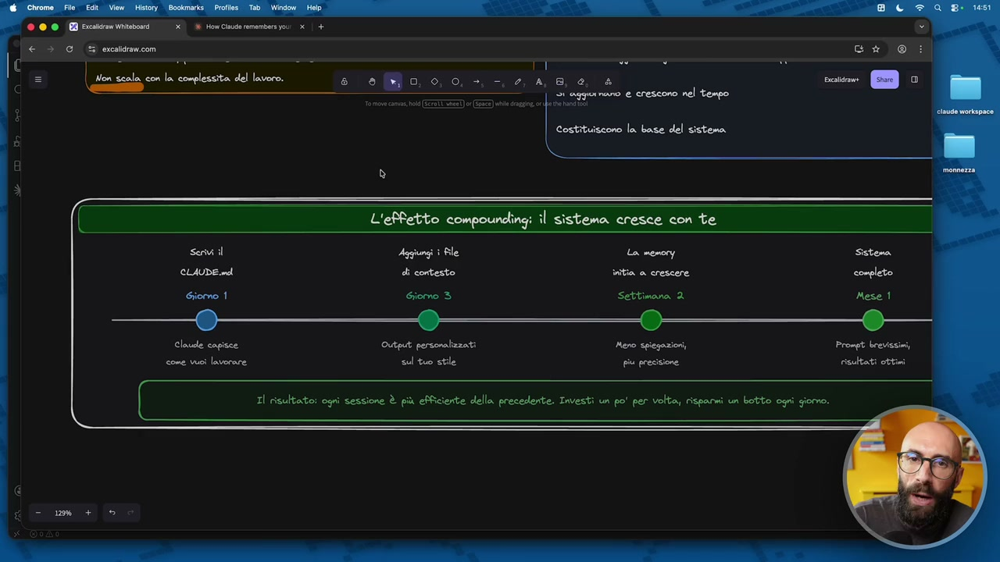
OCR: Costituiscono la base del sistema Output personalizzati Nero spiegazioni sol tuo stile più presisione Il risultato: ogni sessione è più eNiciente della precedente. Investi un po' per volta, risparmi un botto ogni giorno.
Il risultato finale è sempre meglio in questo caso, parlando di Cloud. Che significa? Significa che io all'inizio vado molto blando e quindi scrivo magari solo il file cloud.Md, che è il file principale di contesto. Ci arriviamo e tra un attimo capiamo cosa c'è dentro questi file, però voglio farvi capire prima concettualmente la struttura che c'è dietro. E con questo Cloud capisce chi siamo, come lavoriamo, come ci siamo organizzati. Mano a mano poi nei giorni successivi aggiungiamo dei file di contesto, Cloud inizia a capire il nostro stile, il nostro tono di voce, il nostro approccio, i nostri valori e così via. Poi iniziamo a utilizzarlo, man mano che lo utilizziamo, quando sbaglia gli diciamo che delle cose le deve correggere e Cloud quindi aggiorna la memoria. Vi ricordate? La memoria è già comparsa in qualche lezione precedente. Cloud diceva, ah ok, sta cosa la vuoi in questo modo, me lo segno per sicurezza.
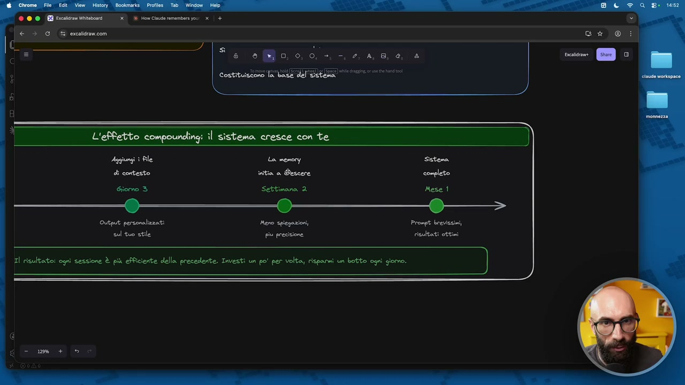
OCR: Output: personalizzati Meno spiegazioni, sul tuo stile più precisione ZI risultato: ogni sessione È più ePciente della precedente. Investi un po' per volta, risparmi un botto ogni giomo.
E questo avviene in automatico, no, perché lui sbaglia e noi lo correggiamo, perché gli diamo delle preferenze, perché lo deduce da cose che abbiamo scritto e così via. Che succede? Succede che dopo 8 settimane il sistema è completo. Cioè facciamo delle richieste brevissime e otteniamo sempre dei risultati super personalizzati, super precisi, proprio come servono a noi. Io qua ho scritto un mese, mano, cioè questo è solo per farvi capire che è una cosa che si distribuisce nel tempo, in realtà no, cioè io quando ho usato Cloud Code la prima volta mi sono messo un giorno e in un giorno ho fatto tutto il, diciamo, questo setup del contesto. Anche perché poi dipende quanto ci volete mettere voi nel contesto e decidete voi quanto lo volete rendere ricco, mettiamola così. Però questa cosa può essere fatta in poco, questo è importante, ve lo voglio far capire, veramente in una manciata di ore. E anche qua ci facciamo guidare da Cloud, lo facciamo insieme, non è che lo dobbiamo fare noi. È Cloud che scrive il contesto in base alle nostre, diciamo, istruzioni, no? A quello che noi vogliamo ottenere. Però con questo avete idea quantomeno del perché il contesto è fondamentale e soprattutto che cos'è.
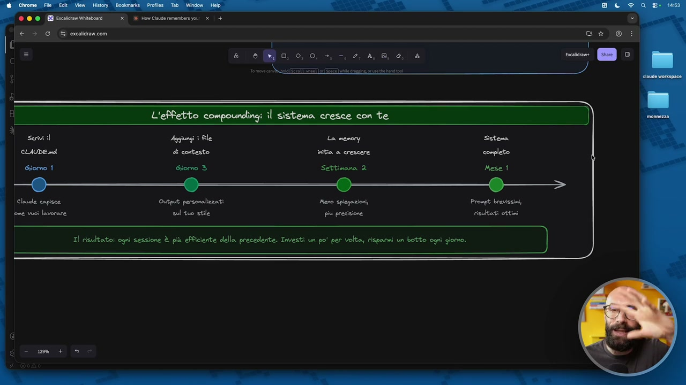
OCR: La menory Sstena initia a crescere congleto Settimana 2 e__t_- Output personalizzati Prompt brevissimi, sul tuo stile più precisione risultati ottimi I risultato; ogni sessione È più eRciente della precedente. Investi un po' per volta risparmi un botto ogni giomo.